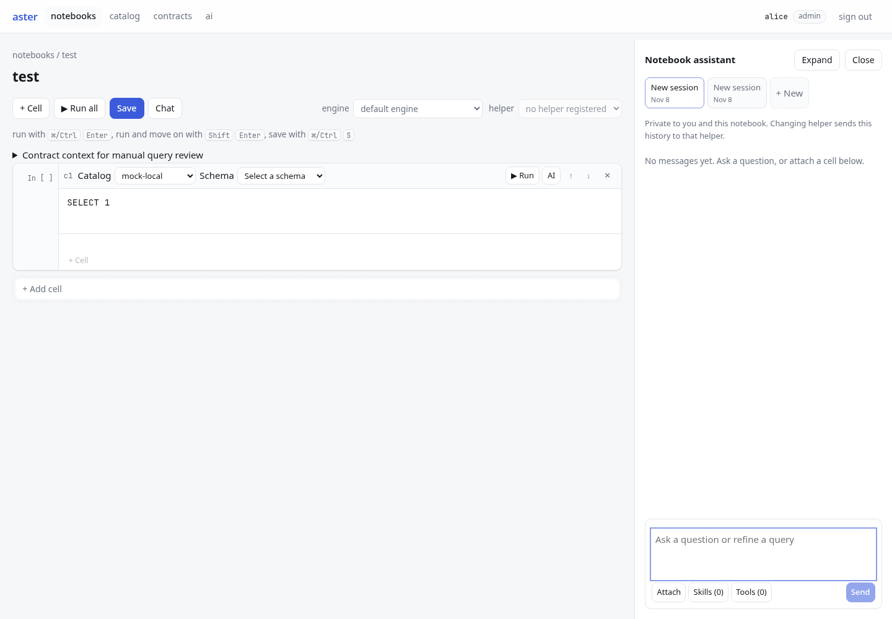
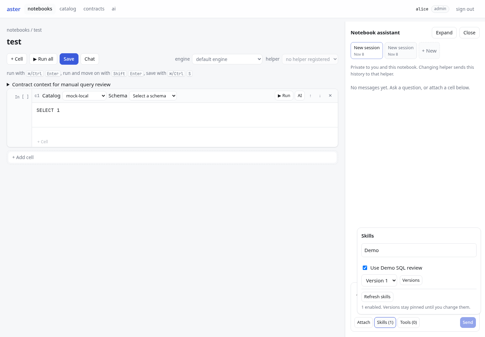
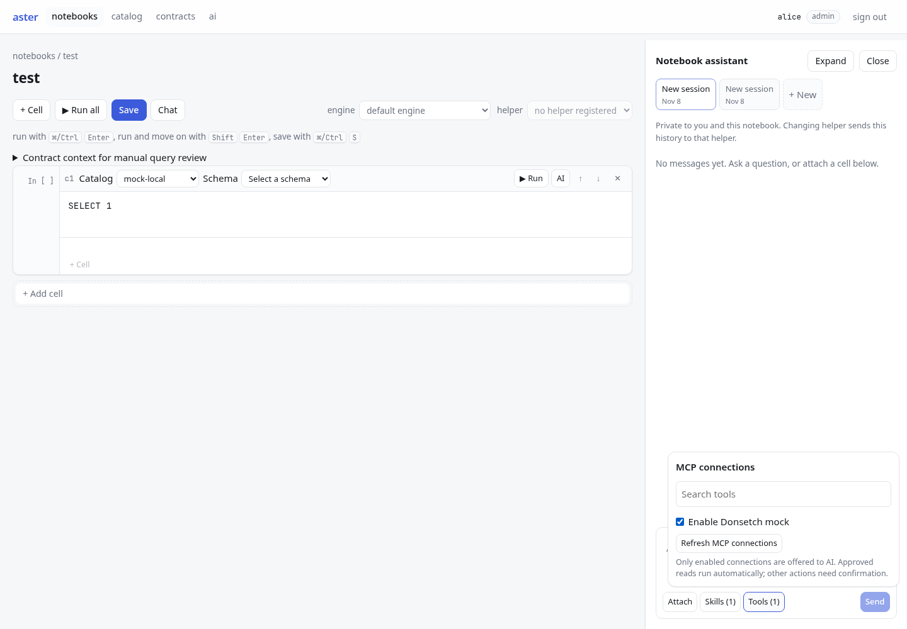
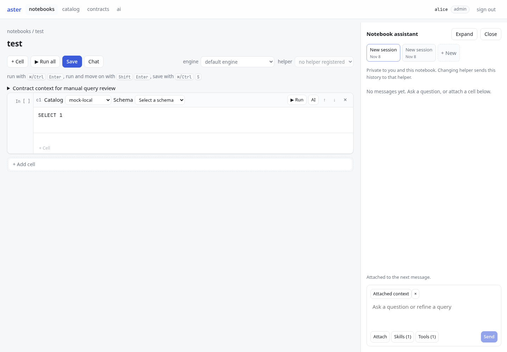
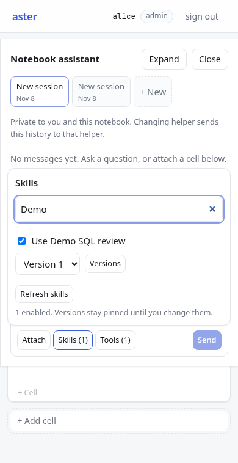
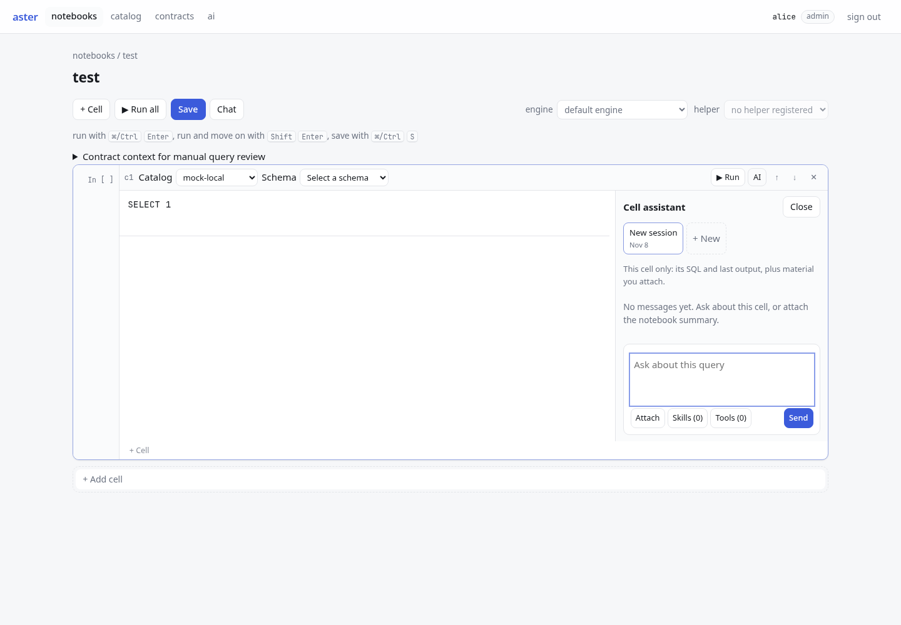

Deployed localhost:8081 · November 8, 2026 · actual Chromium captures. Notebook and cell composers use Attach, Skills and Tools popovers. No model inference in these captures.
Open running notebook · Open WebUI reference and previous Aster layout





